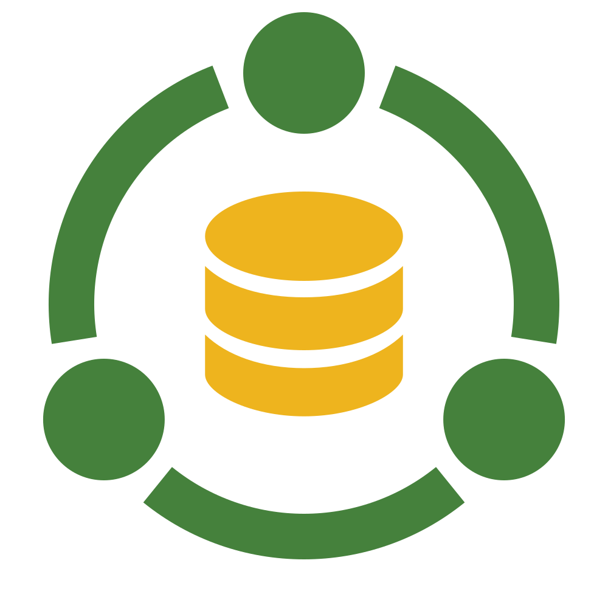

O CDM conecta a necessidade do negócio ao SAP.
A área informa o que conhece. O CDM prepara o que o SAP precisa.

Você conhece a necessidade. O CDM conhece o processo.
Informações do negócio entram de forma orientada. Regras, padrões e validações ajudam a preparar o cadastro.

Dados Mestres
O núcleo aparece primeiro. A informação ganha forma e contexto depois, seguindo a motion oficial do material fornecido.
Cada pessoa participa na etapa certa.
Trabalha com informações que conhece e acompanha o andamento.
Valida a necessidade antes de seguir para o cadastro.
Padroniza, revisa e conduz o processo até a integração.
Uma sequência simples para acompanhar e decidir.
Solicitar. Validar. Aprovar. Cadastrar.
A necessidade entra com contexto e direcionamento.
O conteúdo é revisado para evitar dúvidas e retrabalho.
As áreas responsáveis confirmam a continuidade.
O material segue estruturado para integração com o SAP.
A área informa o que conhece. O CDM organiza o restante.
Contexto, necessidade e informações conhecidas pela área.
Ajuda, exemplos e regras aparecem quando fazem sentido.
Validação, revisão e padronização antes de seguir.
Cadastro estruturado para integração com mais segurança.
O mesmo processo entrega clareza para todos.
Consegue pedir com contexto e acompanhar o andamento.
Enxerga responsabilidades, fluxo e governança com menos ruído.
Recebe uma solicitação mais organizada para revisar e integrar.
Dados Mestres
Agora vamos acompanhar essa jornada no CDM.
Da linguagem do negócio à integração com o SAP, com governança no caminho.